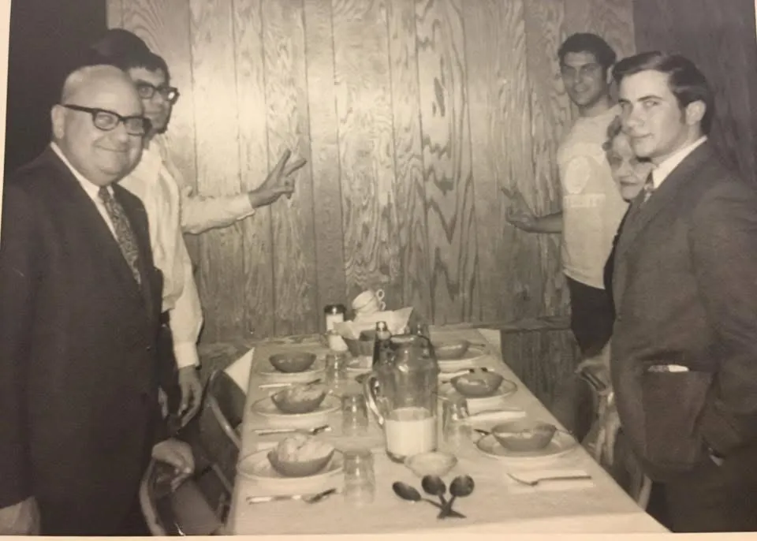

Zeta Beta Tau founded nationally
The national fraternity begins the tradition Beta Delta would later carry at Rutgers.

Preserving more than seven decades
Composites, photographs, newsletters and artifacts connect today’s chapter with the generations who built Beta Delta.

Joe Glaser
Joe Glaser founded the Beta Delta Chapter at Rutgers University in 1948 and remained a longtime advisor and supporter. His leadership established the foundation that generations of brothers continue to build upon.
Joe’s continued presence—sharing meals, attending chapter gatherings and appearing in later composites—shows that his role extended far beyond the founding moment. He is a member of the Beta Delta Hall of Fame.

Chapter Through the Years
The national fraternity begins the tradition Beta Delta would later carry at Rutgers.
Joe Glaser and the founding brothers establish the chapter.
Composites, philanthropy, formals and chapter traditions document decades of brotherhood.
The Founding Fathers family tree records the mentorship lineages behind the modern chapter.
The chapter faces a major loss and begins rebuilding its housing future.
A new home begins the chapter’s next era in the heart of campus.
Past Composites
Select any image to view it at a larger size.
Historic Photos & Artifacts
Candid photographs and physical artifacts preserve the personality, traditions and everyday life of the chapter.
Beta Delta Hall of Fame
Visible honorees include Joe Glaser ’33, Art Horzore ’36, Keith Brauer ’82, Mike Schumacher ’83, Ray Woody ’84, Corey Zucker ’85 and Steven Springer ’07.
The 2025 class added Frank Sternberg ’86, Howdee Ballinger ’88 and Steve Royston ’10.
Help Build the Archive
Alumni with chapter composites, photographs, newsletters or records from missing years are encouraged to share them with the chapter so this archive can continue growing.
Connect with the Alumni Group